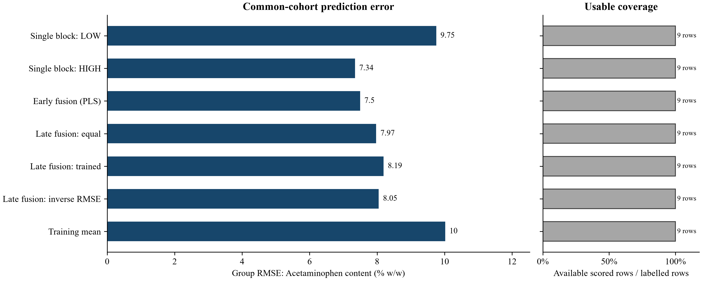
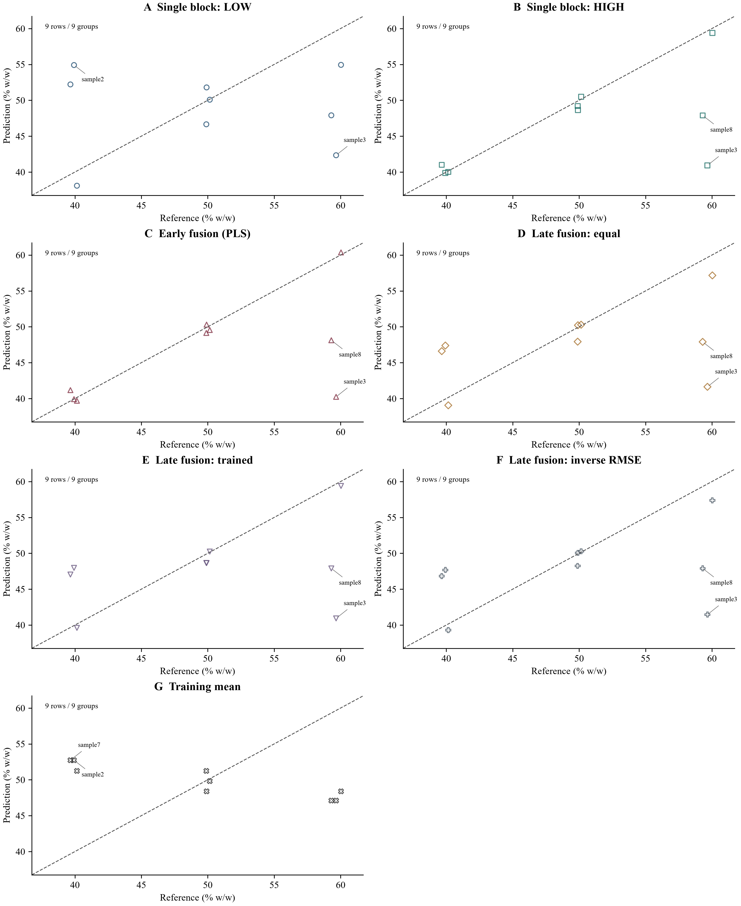
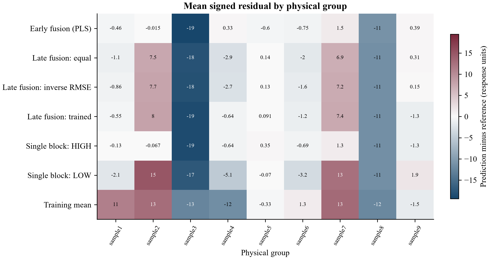
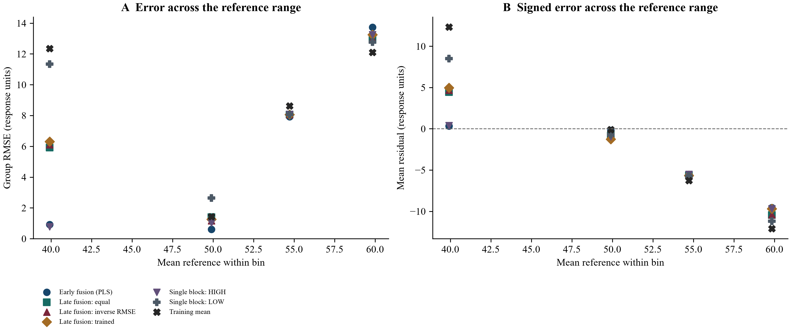
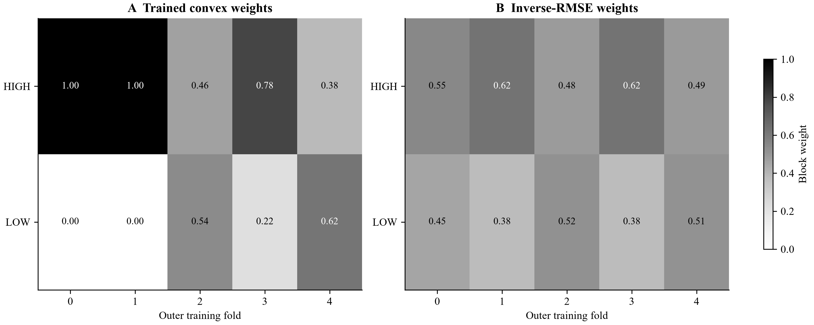
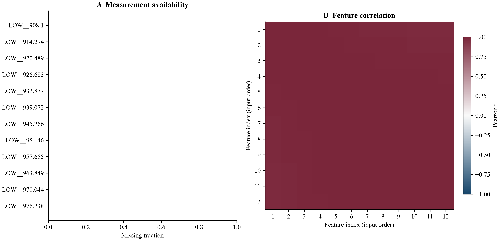

Input: temperature_bands.csv; 9 rows. Computation completed; evidence availability: complete.
Target: Acetaminophen content (% w/w). Errors use held-out physical groups; comparisons use the stated common cohort.
all methods: lowest displayed group RMSE = 7.3448 for Single block: HIGH, on 9 rows / 9 groups. This ranking is descriptive and may change on new data.

Figure 1. Group-weighted RMSE on the same scored observations for every eligible method. Excluded methods remain identified in tables. Weights and component choices are learned inside the training folds; lower error is better. Prediction coverage is reported separately.

Prediction diagnostics. Acetaminophen content (% w/w). Identical axes across methods; each point is a scored observation. Dashed line is identity. For nine or fewer rows, the two largest absolute errors are labelled; all identifiers remain in predictions.csv. No fit line, replicate uncertainty or additional validation is implied.

Mean signed errors per physical group. Positive means overprediction; the symmetric scale is centred at zero. The first 30 sorted groups are shown when necessary; group_diagnostics.csv retains every group. Group means can hide within-group variation.

Up to four shared quantile bins are used after prediction, for diagnosis only. Dots are bin summaries, not a fitted trend. Bin and physical-group counts are in reference_range_diagnostics.csv; sparse bins do not establish a stable error profile.

Each cell is a weight learned using only that outer fold's training data and nested out-of-fold predictions. Folds are categorical. Variation is descriptive; weights are not causal sensor importance. Exact components and fallbacks remain in fitted_choices.csv.

First 12 selected features in input order, without choosing them for apparent association. Correlations use available row pairs, with at least three pairs; blank cells are unavailable. Repeated observations can drive associations. Full availability statistics and preview feature names are exported; this view does not select model features.
Part 1/2.
| model | cohort | n | n_groups | coverage | rmse |
|---|---|---|---|---|---|
| Single block: LOW | all_available_rows | 9 | 9 | 1 | 9.75231 |
| Single block: LOW | common_scored_rows | 9 | 9 | 1 | 9.75231 |
| Single block: HIGH | all_available_rows | 9 | 9 | 1 | 7.3448 |
| Single block: HIGH | common_scored_rows | 9 | 9 | 1 | 7.3448 |
| Early fusion (PLS) | all_available_rows | 9 | 9 | 1 | 7.4974 |
| Early fusion (PLS) | common_scored_rows | 9 | 9 | 1 | 7.4974 |
| Late fusion (equal weights) | all_available_rows | 9 | 9 | 1 | 7.97346 |
| Late fusion (equal weights) | common_scored_rows | 9 | 9 | 1 | 7.97346 |
| Late fusion (trained weights) | all_available_rows | 9 | 9 | 1 | 8.19249 |
| Late fusion (trained weights) | common_scored_rows | 9 | 9 | 1 | 8.19249 |
| Late fusion (inverse RMSE) | all_available_rows | 9 | 9 | 1 | 8.04965 |
| Late fusion (inverse RMSE) | common_scored_rows | 9 | 9 | 1 | 8.04965 |
| Training mean | all_available_rows | 9 | 9 | 1 | 10.0195 |
| Training mean | common_scored_rows | 9 | 9 | 1 | 10.0195 |
Part 2/2.
| model | mae | bias | r2 | group_rmse |
|---|---|---|---|---|
| Single block: LOW | 7.62081 | -1.08432 | -0.461697 | 9.75231 |
| Single block: LOW | 7.62081 | -1.08432 | -0.461697 | 9.75231 |
| Single block: HIGH | 3.84803 | -3.47231 | 0.170908 | 7.3448 |
| Single block: HIGH | 3.84803 | -3.47231 | 0.170908 | 7.3448 |
| Early fusion (PLS) | 3.85138 | -3.3537 | 0.1361 | 7.4974 |
| Early fusion (PLS) | 3.85138 | -3.3537 | 0.1361 | 7.4974 |
| Late fusion (equal weights) | 5.57796 | -2.27831 | 0.0229057 | 7.97346 |
| Late fusion (equal weights) | 5.57796 | -2.27831 | 0.0229057 | 7.97346 |
| Late fusion (trained weights) | 5.48385 | -2.03706 | -0.0315116 | 8.19249 |
| Late fusion (trained weights) | 5.48385 | -2.03706 | -0.0315116 | 8.19249 |
| Late fusion (inverse RMSE) | 5.55076 | -2.17427 | 0.00414326 | 8.04965 |
| Late fusion (inverse RMSE) | 5.55076 | -2.17427 | 0.00414326 | 8.04965 |
| Training mean | 8.50423 | 0.00529762 | -0.542885 | 10.0195 |
| Training mean | 8.50423 | 0.00529762 | -0.542885 | 10.0195 |
Complete tables are supplied as CSV; previews below retain the stated row and column limits.
Showing 12 of 128 rows; the complete table is in input_audit.csv.
| column | missing_cells | observed_cells | unique_observed |
|---|---|---|---|
| sample_id | 0 | 9 | 9 |
| group | 0 | 9 | 9 |
| target | 0 | 9 | 9 |
| LOW__908.1 | 0 | 9 | 9 |
| LOW__914.294 | 0 | 9 | 9 |
| LOW__920.489 | 0 | 9 | 9 |
| LOW__926.683 | 0 | 9 | 9 |
| LOW__932.877 | 0 | 9 | 9 |
| LOW__939.072 | 0 | 9 | 9 |
| LOW__945.266 | 0 | 9 | 9 |
| LOW__951.46 | 0 | 9 | 9 |
| LOW__957.655 | 0 | 9 | 9 |
Showing 24 of 63 rows; the complete table is in predictions.csv.
Part 1/2.
| sample_id | group | fold | model | reference | prediction |
|---|---|---|---|---|---|
| X1_sample1 | sample1 | 3 | Single block: LOW | 40.15 | 38.0935 |
| X1_sample2 | sample2 | 2 | Single block: LOW | 39.93 | 54.9104 |
| X1_sample3 | sample3 | 1 | Single block: LOW | 59.66 | 42.3411 |
| X1_sample4 | sample4 | 0 | Single block: LOW | 60.03 | 54.935 |
| X1_sample5 | sample5 | 4 | Single block: LOW | 50.15 | 50.0798 |
| X1_sample6 | sample6 | 3 | Single block: LOW | 49.89 | 46.6534 |
| X1_sample7 | sample7 | 2 | Single block: LOW | 39.66 | 52.2111 |
| X1_sample8 | sample8 | 1 | Single block: LOW | 59.3 | 47.904 |
| X1_sample9 | sample9 | 0 | Single block: LOW | 49.91 | 51.7927 |
| X1_sample1 | sample1 | 3 | Single block: HIGH | 40.15 | 40.0194 |
| X1_sample2 | sample2 | 2 | Single block: HIGH | 39.93 | 39.8628 |
| X1_sample3 | sample3 | 1 | Single block: HIGH | 59.66 | 40.9269 |
| X1_sample4 | sample4 | 0 | Single block: HIGH | 60.03 | 59.3865 |
| X1_sample5 | sample5 | 4 | Single block: HIGH | 50.15 | 50.4993 |
| X1_sample6 | sample6 | 3 | Single block: HIGH | 49.89 | 49.2016 |
| X1_sample7 | sample7 | 2 | Single block: HIGH | 39.66 | 41.0014 |
| X1_sample8 | sample8 | 1 | Single block: HIGH | 59.3 | 47.8921 |
| X1_sample9 | sample9 | 0 | Single block: HIGH | 49.91 | 48.6392 |
| X1_sample1 | sample1 | 3 | Early fusion (PLS) | 40.15 | 39.6911 |
| X1_sample2 | sample2 | 2 | Early fusion (PLS) | 39.93 | 39.9154 |
| X1_sample3 | sample3 | 1 | Early fusion (PLS) | 59.66 | 40.2368 |
| X1_sample4 | sample4 | 0 | Early fusion (PLS) | 60.03 | 60.3648 |
| X1_sample5 | sample5 | 4 | Early fusion (PLS) | 50.15 | 49.5532 |
| X1_sample6 | sample6 | 3 | Early fusion (PLS) | 49.89 | 49.1391 |
Part 2/2.
| sample_id | residual | evaluation | in_common_cohort |
|---|---|---|---|
| X1_sample1 | -2.05646 | out_of_fold | True |
| X1_sample2 | 14.9804 | out_of_fold | True |
| X1_sample3 | -17.3189 | out_of_fold | True |
| X1_sample4 | -5.09502 | out_of_fold | True |
| X1_sample5 | -0.070158 | out_of_fold | True |
| X1_sample6 | -3.23656 | out_of_fold | True |
| X1_sample7 | 12.5511 | out_of_fold | True |
| X1_sample8 | -11.396 | out_of_fold | True |
| X1_sample9 | 1.88267 | out_of_fold | True |
| X1_sample1 | -0.130553 | out_of_fold | True |
| X1_sample2 | -0.0671891 | out_of_fold | True |
| X1_sample3 | -18.7331 | out_of_fold | True |
| X1_sample4 | -0.643544 | out_of_fold | True |
| X1_sample5 | 0.349291 | out_of_fold | True |
| X1_sample6 | -0.688449 | out_of_fold | True |
| X1_sample7 | 1.34145 | out_of_fold | True |
| X1_sample8 | -11.4079 | out_of_fold | True |
| X1_sample9 | -1.27077 | out_of_fold | True |
| X1_sample1 | -0.458913 | out_of_fold | True |
| X1_sample2 | -0.0146203 | out_of_fold | True |
| X1_sample3 | -19.4232 | out_of_fold | True |
| X1_sample4 | 0.334765 | out_of_fold | True |
| X1_sample5 | -0.596835 | out_of_fold | True |
| X1_sample6 | -0.750946 | out_of_fold | True |
Part 1/2.
| fold | block | components | estimator | weight | weight_method |
|---|---|---|---|---|---|
| 0 | LOW | 3 | PLS | 0 | nonnegative sum-to-one weights learned from nested grouped out-of-fold training predictions |
| 0 | HIGH | 3 | PLS | 1 | nonnegative sum-to-one weights learned from nested grouped out-of-fold training predictions |
| 1 | LOW | 1 | PLS | 4.4062e-16 | nonnegative sum-to-one weights learned from nested grouped out-of-fold training predictions |
| 1 | HIGH | 1 | PLS | 1 | nonnegative sum-to-one weights learned from nested grouped out-of-fold training predictions |
| 2 | LOW | 2 | PLS | 0.538737 | nonnegative sum-to-one weights learned from nested grouped out-of-fold training predictions |
| 2 | HIGH | 3 | PLS | 0.461263 | nonnegative sum-to-one weights learned from nested grouped out-of-fold training predictions |
| 3 | LOW | 3 | PLS | 0.216754 | nonnegative sum-to-one weights learned from nested grouped out-of-fold training predictions |
| 3 | HIGH | 3 | PLS | 0.783246 | nonnegative sum-to-one weights learned from nested grouped out-of-fold training predictions |
| 4 | LOW | 3 | PLS | 0.616905 | nonnegative sum-to-one weights learned from nested grouped out-of-fold training predictions |
| 4 | HIGH | 3 | PLS | 0.383095 | nonnegative sum-to-one weights learned from nested grouped out-of-fold training predictions |
Part 2/2.
| fold | inverse_rmse_weight | inverse_rmse_weight_method | early_components | early_estimator |
|---|---|---|---|---|
| 0 | 0.451673 | normalized inverse grouped RMSE from shared nested out-of-fold training predictions; exact-zero errors share all weight | 3 | PLS |
| 0 | 0.548327 | normalized inverse grouped RMSE from shared nested out-of-fold training predictions; exact-zero errors share all weight | 3 | PLS |
| 1 | 0.375241 | normalized inverse grouped RMSE from shared nested out-of-fold training predictions; exact-zero errors share all weight | 1 | PLS |
| 1 | 0.624759 | normalized inverse grouped RMSE from shared nested out-of-fold training predictions; exact-zero errors share all weight | 1 | PLS |
| 2 | 0.519186 | normalized inverse grouped RMSE from shared nested out-of-fold training predictions; exact-zero errors share all weight | 3 | PLS |
| 2 | 0.480814 | normalized inverse grouped RMSE from shared nested out-of-fold training predictions; exact-zero errors share all weight | 3 | PLS |
| 3 | 0.376315 | normalized inverse grouped RMSE from shared nested out-of-fold training predictions; exact-zero errors share all weight | 3 | PLS |
| 3 | 0.623685 | normalized inverse grouped RMSE from shared nested out-of-fold training predictions; exact-zero errors share all weight | 3 | PLS |
| 4 | 0.513349 | normalized inverse grouped RMSE from shared nested out-of-fold training predictions; exact-zero errors share all weight | 3 | PLS |
| 4 | 0.486651 | normalized inverse grouped RMSE from shared nested out-of-fold training predictions; exact-zero errors share all weight | 3 | PLS |
Showing 12 of 45 rows; the complete table is in splits.csv.
| fold | role | sample_id | group | evaluation_group |
|---|---|---|---|---|
| 0 | train | X1_sample1 | sample1 | sample1 |
| 0 | train | X1_sample2 | sample2 | sample2 |
| 0 | train | X1_sample3 | sample3 | sample3 |
| 0 | train | X1_sample5 | sample5 | sample5 |
| 0 | train | X1_sample6 | sample6 | sample6 |
| 0 | train | X1_sample7 | sample7 | sample7 |
| 0 | train | X1_sample8 | sample8 | sample8 |
| 0 | test | X1_sample4 | sample4 | sample4 |
| 0 | test | X1_sample9 | sample9 | sample9 |
| 1 | train | X1_sample1 | sample1 | sample1 |
| 1 | train | X1_sample2 | sample2 | sample2 |
| 1 | train | X1_sample4 | sample4 | sample4 |
Showing 24 of 125 rows; the complete table is in feature_quality.csv.
Part 1/2.
| feature | observed_rows | missing_fraction | minimum | median | maximum |
|---|---|---|---|---|---|
| LOW__908.1 | 9 | 0 | 0.229562 | 0.254934 | 0.33972 |
| LOW__914.294 | 9 | 0 | 0.229764 | 0.256754 | 0.341508 |
| LOW__920.489 | 9 | 0 | 0.228899 | 0.257623 | 0.341871 |
| LOW__926.683 | 9 | 0 | 0.229004 | 0.259005 | 0.342805 |
| LOW__932.877 | 9 | 0 | 0.217792 | 0.249249 | 0.331655 |
| LOW__939.072 | 9 | 0 | 0.207274 | 0.239122 | 0.322339 |
| LOW__945.266 | 9 | 0 | 0.20201 | 0.233878 | 0.318063 |
| LOW__951.46 | 9 | 0 | 0.195935 | 0.228165 | 0.311096 |
| LOW__957.655 | 9 | 0 | 0.19549 | 0.228408 | 0.311265 |
| LOW__963.849 | 9 | 0 | 0.19242 | 0.226012 | 0.307684 |
| LOW__970.044 | 9 | 0 | 0.194415 | 0.228935 | 0.310307 |
| LOW__976.238 | 9 | 0 | 0.194412 | 0.229593 | 0.309929 |
| LOW__982.432 | 9 | 0 | 0.198197 | 0.233846 | 0.314634 |
| LOW__988.627 | 9 | 0 | 0.198214 | 0.233967 | 0.314419 |
| LOW__994.821 | 9 | 0 | 0.196367 | 0.231738 | 0.312103 |
| LOW__1001.015 | 9 | 0 | 0.197493 | 0.232559 | 0.313749 |
| LOW__1007.21 | 9 | 0 | 0.198073 | 0.232632 | 0.314308 |
| LOW__1013.404 | 9 | 0 | 0.199805 | 0.234128 | 0.31701 |
| LOW__1019.598 | 9 | 0 | 0.199966 | 0.234059 | 0.317504 |
| LOW__1025.793 | 9 | 0 | 0.195457 | 0.229446 | 0.311873 |
| LOW__1031.987 | 9 | 0 | 0.199345 | 0.233517 | 0.317181 |
| LOW__1038.181 | 9 | 0 | 0.194773 | 0.229035 | 0.311407 |
| LOW__1044.376 | 9 | 0 | 0.195655 | 0.230097 | 0.312773 |
| LOW__1050.57 | 9 | 0 | 0.195726 | 0.230042 | 0.313009 |
Part 2/2.
| feature | distinct_values |
|---|---|
| LOW__908.1 | 9 |
| LOW__914.294 | 9 |
| LOW__920.489 | 9 |
| LOW__926.683 | 9 |
| LOW__932.877 | 9 |
| LOW__939.072 | 9 |
| LOW__945.266 | 9 |
| LOW__951.46 | 9 |
| LOW__957.655 | 9 |
| LOW__963.849 | 9 |
| LOW__970.044 | 9 |
| LOW__976.238 | 9 |
| LOW__982.432 | 9 |
| LOW__988.627 | 9 |
| LOW__994.821 | 9 |
| LOW__1001.015 | 9 |
| LOW__1007.21 | 9 |
| LOW__1013.404 | 9 |
| LOW__1019.598 | 9 |
| LOW__1025.793 | 9 |
| LOW__1031.987 | 9 |
| LOW__1038.181 | 9 |
| LOW__1044.376 | 9 |
| LOW__1050.57 | 9 |
Part 1/3.
| feature | LOW__908.1 | LOW__914.294 | LOW__920.489 | LOW__926.683 | LOW__932.877 |
|---|---|---|---|---|---|
| LOW__908.1 | 1 | 0.999056 | 0.996708 | 0.9937 | 0.989069 |
| LOW__914.294 | 0.999056 | 1 | 0.999281 | 0.997617 | 0.994495 |
| LOW__920.489 | 0.996708 | 0.999281 | 1 | 0.99951 | 0.997738 |
| LOW__926.683 | 0.9937 | 0.997617 | 0.99951 | 1 | 0.999326 |
| LOW__932.877 | 0.989069 | 0.994495 | 0.997738 | 0.999326 | 1 |
| LOW__939.072 | 0.985 | 0.991477 | 0.995665 | 0.998021 | 0.999655 |
| LOW__945.266 | 0.981544 | 0.988793 | 0.993678 | 0.996602 | 0.998948 |
| LOW__951.46 | 0.979068 | 0.986798 | 0.992125 | 0.995412 | 0.998238 |
| LOW__957.655 | 0.977248 | 0.985368 | 0.991026 | 0.994589 | 0.997722 |
| LOW__963.849 | 0.975548 | 0.983969 | 0.989906 | 0.993695 | 0.997126 |
| LOW__970.044 | 0.973196 | 0.982082 | 0.988413 | 0.992527 | 0.99632 |
| LOW__976.238 | 0.970902 | 0.980195 | 0.986887 | 0.991298 | 0.995439 |
Part 2/3.
| feature | LOW__939.072 | LOW__945.266 | LOW__951.46 | LOW__957.655 | LOW__963.849 |
|---|---|---|---|---|---|
| LOW__908.1 | 0.985 | 0.981544 | 0.979068 | 0.977248 | 0.975548 |
| LOW__914.294 | 0.991477 | 0.988793 | 0.986798 | 0.985368 | 0.983969 |
| LOW__920.489 | 0.995665 | 0.993678 | 0.992125 | 0.991026 | 0.989906 |
| LOW__926.683 | 0.998021 | 0.996602 | 0.995412 | 0.994589 | 0.993695 |
| LOW__932.877 | 0.999655 | 0.998948 | 0.998238 | 0.997722 | 0.997126 |
| LOW__939.072 | 1 | 0.999805 | 0.999447 | 0.999148 | 0.998769 |
| LOW__945.266 | 0.999805 | 1 | 0.9999 | 0.999757 | 0.999543 |
| LOW__951.46 | 0.999447 | 0.9999 | 1 | 0.999955 | 0.999859 |
| LOW__957.655 | 0.999148 | 0.999757 | 0.999955 | 1 | 0.999963 |
| LOW__963.849 | 0.998769 | 0.999543 | 0.999859 | 0.999963 | 1 |
| LOW__970.044 | 0.99822 | 0.999179 | 0.99961 | 0.999823 | 0.999932 |
| LOW__976.238 | 0.997588 | 0.998729 | 0.999282 | 0.999585 | 0.99977 |
Part 3/3.
| feature | LOW__970.044 | LOW__976.238 |
|---|---|---|
| LOW__908.1 | 0.973196 | 0.970902 |
| LOW__914.294 | 0.982082 | 0.980195 |
| LOW__920.489 | 0.988413 | 0.986887 |
| LOW__926.683 | 0.992527 | 0.991298 |
| LOW__932.877 | 0.99632 | 0.995439 |
| LOW__939.072 | 0.99822 | 0.997588 |
| LOW__945.266 | 0.999179 | 0.998729 |
| LOW__951.46 | 0.99961 | 0.999282 |
| LOW__957.655 | 0.999823 | 0.999585 |
| LOW__963.849 | 0.999932 | 0.99977 |
| LOW__970.044 | 1 | 0.999949 |
| LOW__976.238 | 0.999949 | 1 |
Showing 24 of 63 rows; the complete table is in group_diagnostics.csv.
Part 1/2.
| model | group | n | reference_mean | prediction_mean | rmse |
|---|---|---|---|---|---|
| Early fusion (PLS) | sample1 | 1 | 40.15 | 39.6911 | 0.458913 |
| Early fusion (PLS) | sample2 | 1 | 39.93 | 39.9154 | 0.0146203 |
| Early fusion (PLS) | sample3 | 1 | 59.66 | 40.2368 | 19.4232 |
| Early fusion (PLS) | sample4 | 1 | 60.03 | 60.3648 | 0.334765 |
| Early fusion (PLS) | sample5 | 1 | 50.15 | 49.5532 | 0.596835 |
| Early fusion (PLS) | sample6 | 1 | 49.89 | 49.1391 | 0.750946 |
| Early fusion (PLS) | sample7 | 1 | 39.66 | 41.1712 | 1.51116 |
| Early fusion (PLS) | sample8 | 1 | 59.3 | 48.1217 | 11.1783 |
| Early fusion (PLS) | sample9 | 1 | 49.91 | 50.3036 | 0.393634 |
| Late fusion (equal weights) | sample1 | 1 | 40.15 | 39.0565 | 1.09351 |
| Late fusion (equal weights) | sample2 | 1 | 39.93 | 47.3866 | 7.45663 |
| Late fusion (equal weights) | sample3 | 1 | 59.66 | 41.634 | 18.026 |
| Late fusion (equal weights) | sample4 | 1 | 60.03 | 57.1607 | 2.86928 |
| Late fusion (equal weights) | sample5 | 1 | 50.15 | 50.2896 | 0.139566 |
| Late fusion (equal weights) | sample6 | 1 | 49.89 | 47.9275 | 1.96251 |
| Late fusion (equal weights) | sample7 | 1 | 39.66 | 46.6063 | 6.94627 |
| Late fusion (equal weights) | sample8 | 1 | 59.3 | 47.898 | 11.402 |
| Late fusion (equal weights) | sample9 | 1 | 49.91 | 50.216 | 0.30595 |
| Late fusion (inverse RMSE) | sample1 | 1 | 40.15 | 39.2947 | 0.855302 |
| Late fusion (inverse RMSE) | sample2 | 1 | 39.93 | 47.6753 | 7.74533 |
| Late fusion (inverse RMSE) | sample3 | 1 | 59.66 | 41.4576 | 18.2024 |
| Late fusion (inverse RMSE) | sample4 | 1 | 60.03 | 57.3758 | 2.65416 |
| Late fusion (inverse RMSE) | sample5 | 1 | 50.15 | 50.284 | 0.133967 |
| Late fusion (inverse RMSE) | sample6 | 1 | 49.89 | 48.2427 | 1.64734 |
Part 2/2.
| model | mae | bias |
|---|---|---|
| Early fusion (PLS) | 0.458913 | -0.458913 |
| Early fusion (PLS) | 0.0146203 | -0.0146203 |
| Early fusion (PLS) | 19.4232 | -19.4232 |
| Early fusion (PLS) | 0.334765 | 0.334765 |
| Early fusion (PLS) | 0.596835 | -0.596835 |
| Early fusion (PLS) | 0.750946 | -0.750946 |
| Early fusion (PLS) | 1.51116 | 1.51116 |
| Early fusion (PLS) | 11.1783 | -11.1783 |
| Early fusion (PLS) | 0.393634 | 0.393634 |
| Late fusion (equal weights) | 1.09351 | -1.09351 |
| Late fusion (equal weights) | 7.45663 | 7.45663 |
| Late fusion (equal weights) | 18.026 | -18.026 |
| Late fusion (equal weights) | 2.86928 | -2.86928 |
| Late fusion (equal weights) | 0.139566 | 0.139566 |
| Late fusion (equal weights) | 1.96251 | -1.96251 |
| Late fusion (equal weights) | 6.94627 | 6.94627 |
| Late fusion (equal weights) | 11.402 | -11.402 |
| Late fusion (equal weights) | 0.30595 | 0.30595 |
| Late fusion (inverse RMSE) | 0.855302 | -0.855302 |
| Late fusion (inverse RMSE) | 7.74533 | 7.74533 |
| Late fusion (inverse RMSE) | 18.2024 | -18.2024 |
| Late fusion (inverse RMSE) | 2.65416 | -2.65416 |
| Late fusion (inverse RMSE) | 0.133967 | 0.133967 |
| Late fusion (inverse RMSE) | 1.64734 | -1.64734 |
Showing 24 of 28 rows; the complete table is in reference_range_diagnostics.csv.
Part 1/2.
| model | reference_bin | lower_reference | upper_reference | reference_mean | n |
|---|---|---|---|---|---|
| Early fusion (PLS) | 0 | 39.66 | 40.15 | 39.9133 | 3 |
| Early fusion (PLS) | 1 | 40.15 | 49.91 | 49.9 | 2 |
| Early fusion (PLS) | 2 | 49.91 | 59.3 | 54.725 | 2 |
| Early fusion (PLS) | 3 | 59.3 | 60.03 | 59.845 | 2 |
| Late fusion (equal weights) | 0 | 39.66 | 40.15 | 39.9133 | 3 |
| Late fusion (equal weights) | 1 | 40.15 | 49.91 | 49.9 | 2 |
| Late fusion (equal weights) | 2 | 49.91 | 59.3 | 54.725 | 2 |
| Late fusion (equal weights) | 3 | 59.3 | 60.03 | 59.845 | 2 |
| Late fusion (inverse RMSE) | 0 | 39.66 | 40.15 | 39.9133 | 3 |
| Late fusion (inverse RMSE) | 1 | 40.15 | 49.91 | 49.9 | 2 |
| Late fusion (inverse RMSE) | 2 | 49.91 | 59.3 | 54.725 | 2 |
| Late fusion (inverse RMSE) | 3 | 59.3 | 60.03 | 59.845 | 2 |
| Late fusion (trained weights) | 0 | 39.66 | 40.15 | 39.9133 | 3 |
| Late fusion (trained weights) | 1 | 40.15 | 49.91 | 49.9 | 2 |
| Late fusion (trained weights) | 2 | 49.91 | 59.3 | 54.725 | 2 |
| Late fusion (trained weights) | 3 | 59.3 | 60.03 | 59.845 | 2 |
| Single block: HIGH | 0 | 39.66 | 40.15 | 39.9133 | 3 |
| Single block: HIGH | 1 | 40.15 | 49.91 | 49.9 | 2 |
| Single block: HIGH | 2 | 49.91 | 59.3 | 54.725 | 2 |
| Single block: HIGH | 3 | 59.3 | 60.03 | 59.845 | 2 |
| Single block: LOW | 0 | 39.66 | 40.15 | 39.9133 | 3 |
| Single block: LOW | 1 | 40.15 | 49.91 | 49.9 | 2 |
| Single block: LOW | 2 | 49.91 | 59.3 | 54.725 | 2 |
| Single block: LOW | 3 | 59.3 | 60.03 | 59.845 | 2 |
Part 2/2.
| model | n_groups | rmse | group_rmse | bias |
|---|---|---|---|---|
| Early fusion (PLS) | 3 | 0.91185 | 0.91185 | 0.345875 |
| Early fusion (PLS) | 2 | 0.599528 | 0.599528 | -0.178656 |
| Early fusion (PLS) | 2 | 7.91553 | 7.91553 | -5.88758 |
| Early fusion (PLS) | 2 | 13.7363 | 13.7363 | -9.54423 |
| Late fusion (equal weights) | 3 | 5.91742 | 5.91742 | 4.43646 |
| Late fusion (equal weights) | 2 | 1.40446 | 1.40446 | -0.828278 |
| Late fusion (equal weights) | 2 | 8.063 | 8.063 | -5.63119 |
| Late fusion (equal weights) | 2 | 12.9067 | 12.9067 | -10.4476 |
| Late fusion (inverse RMSE) | 3 | 6.11028 | 6.11028 | 4.68379 |
| Late fusion (inverse RMSE) | 2 | 1.1699 | 1.1699 | -0.746895 |
| Late fusion (inverse RMSE) | 2 | 8.06401 | 8.06401 | -5.63474 |
| Late fusion (inverse RMSE) | 2 | 13.0072 | 13.0072 | -10.4283 |
| Late fusion (trained weights) | 3 | 6.30889 | 6.30889 | 4.95734 |
| Late fusion (trained weights) | 2 | 1.25586 | 1.25586 | -1.25577 |
| Late fusion (trained weights) | 2 | 8.06687 | 8.06687 | -5.65869 |
| Late fusion (trained weights) | 2 | 13.2541 | 13.2541 | -9.68831 |
| Single block: HIGH | 3 | 0.77911 | 0.77911 | 0.381235 |
| Single block: HIGH | 2 | 1.02196 | 1.02196 | -0.97961 |
| Single block: HIGH | 2 | 8.0704 | 8.0704 | -5.52931 |
| Single block: HIGH | 2 | 13.2541 | 13.2541 | -9.68831 |
| Single block: LOW | 3 | 11.3457 | 11.3457 | 8.49169 |
| Single block: LOW | 2 | 2.64762 | 2.64762 | -0.676946 |
| Single block: LOW | 2 | 8.05833 | 8.05833 | -5.73307 |
| Single block: LOW | 2 | 12.7652 | 12.7652 | -11.2069 |
Part 1/2.
| model | baseline | paired_rows | paired_groups | method_group_rmse | baseline_group_rmse |
|---|---|---|---|---|---|
| Early fusion (PLS) | training_mean | 9 | 9 | 7.4974 | 10.0195 |
| Late fusion (equal weights) | training_mean | 9 | 9 | 7.97346 | 10.0195 |
| Late fusion (inverse RMSE) | training_mean | 9 | 9 | 8.04965 | 10.0195 |
| Late fusion (trained weights) | training_mean | 9 | 9 | 8.19249 | 10.0195 |
| Single block: HIGH | training_mean | 9 | 9 | 7.3448 | 10.0195 |
| Single block: LOW | training_mean | 9 | 9 | 9.75231 | 10.0195 |
Part 2/2.
| model | delta_group_rmse | interpretation |
|---|---|---|
| Early fusion (PLS) | -2.52209 | negative difference favours the method on this paired subset |
| Late fusion (equal weights) | -2.04603 | negative difference favours the method on this paired subset |
| Late fusion (inverse RMSE) | -1.96984 | negative difference favours the method on this paired subset |
| Late fusion (trained weights) | -1.827 | negative difference favours the method on this paired subset |
| Single block: HIGH | -2.67469 | negative difference favours the method on this paired subset |
| Single block: LOW | -0.267179 | negative difference favours the method on this paired subset |
| capability | available | level | reason |
|---|---|---|---|
| input_quality | True | descriptive | Parsed rows and selected field availability are retained. |
| paired_descriptions | True | descriptive | Available finite reference/comparison pairs; no missing reference is invented. |
| fitted_model | False | fitting | No estimable requested factor model was fitted. |
| held_out_evaluation | True | evaluation | Recorded disjoint training/held-out units; interpret small samples as exploratory. |
| conditional_uncertainty | False | inference | Required independence, variance, sample structure or prediction provenance is unavailable. |
{
"input_sha256": "31ac4954d1c8c50453a6f1a26bc5f1004bca70a741ec7ec8076bd738a554a398",
"target": "target",
"id": "sample_id",
"group": "group",
"blocks": {
"LOW": [
"LOW__908.1",
"LOW__914.294",
"LOW__920.489",
"LOW__926.683",
"LOW__932.877",
"LOW__939.072",
"LOW__945.266",
"LOW__951.46",
"LOW__957.655",
"LOW__963.849",
"LOW__970.044",
"LOW__976.238",
"LOW__982.432",
"LOW__988.627",
"LOW__994.821",
"LOW__1001.015",
"LOW__1007.21",
"LOW__1013.404",
"LOW__1019.598",
"LOW__1025.793",
"LOW__1031.987",
"LOW__1038.181",
"LOW__1044.376",
"LOW__1050.57",
"LOW__1056.764",
"LOW__1062.959",
"LOW__1069.153",
"LOW__1075.348",
"LOW__1081.542",
"LOW__1087.736",
"LOW__1093.931",
"LOW__1100.125",
"LOW__1106.319",
"LOW__1112.514",
"LOW__1118.708",
"LOW__1124.902",
"LOW__1131.097",
"LOW__1137.291",
"LOW__1143.485",
"LOW__1149.68",
"LOW__1155.874",
"LOW__1162.069",
"LOW__1168.263",
"LOW__1174.457",
"LOW__1180.652",
"LOW__1186.846",
"LOW__1193.04",
"LOW__1199.235",
"LOW__1205.429",
"LOW__1211.623",
"LOW__1217.818",
"LOW__1224.012",
"LOW__1230.206",
"LOW__1236.401",
"LOW__1242.595",
"LOW__1248.789",
"LOW__1254.984",
"LOW__1261.178",
"LOW__1267.373",
"LOW__1273.567",
"LOW__1279.761",
"LOW__1285.956",
"LOW__1292.15",
"LOW__1298.344"
],
"HIGH": [
"HIGH__1304.539",
"HIGH__1310.733",
"HIGH__1316.927",
"HIGH__1323.122",
"HIGH__1329.316",
"HIGH__1335.51",
"HIGH__1341.705",
"HIGH__1347.899",
"HIGH__1354.094",
"HIGH__1360.288",
"HIGH__1366.482",
"HIGH__1372.677",
"HIGH__1378.871",
"HIGH__1385.065",
"HIGH__1391.26",
"HIGH__1397.454",
"HIGH__1403.648",
"HIGH__1409.843",
"HIGH__1416.037",
"HIGH__1422.231",
"HIGH__1428.426",
"HIGH__1434.62",
"HIGH__1440.814",
"HIGH__1447.009",
"HIGH__1453.203",
"HIGH__1459.398",
"HIGH__1465.592",
"HIGH__1471.786",
"HIGH__1477.981",
"HIGH__1484.175",
"HIGH__1490.369",
"HIGH__1496.564",
"HIGH__1502.758",
"HIGH__1508.952",
"HIGH__1515.147",
"HIGH__1521.341",
"HIGH__1527.535",
"HIGH__1533.73",
"HIGH__1539.924",
"HIGH__1546.119",
"HIGH__1552.313",
"HIGH__1558.507",
"HIGH__1564.702",
"HIGH__1570.896",
"HIGH__1577.09",
"HIGH__1583.285",
"HIGH__1589.479",
"HIGH__1595.673",
"HIGH__1601.868",
"HIGH__1608.062",
"HIGH__1614.256",
"HIGH__1620.451",
"HIGH__1626.645",
"HIGH__1632.839",
"HIGH__1639.034",
"HIGH__1645.228",
"HIGH__1651.423",
"HIGH__1657.617",
"HIGH__1663.811",
"HIGH__1670.006",
"HIGH__1676.2"
]
},
"components": [
1,
2,
3
],
"outer_max_folds": 5,
"inner_max_folds": 3,
"common_comparison": {
"n_rows": 9,
"n_groups": 9,
"methods": [
"single_LOW",
"single_HIGH",
"early_pls",
"late_equal",
"late_weighted",
"late_inverse_rmse",
"training_mean"
],
"excluded_methods": [],
"selection_rule": "Exclude methods without any held-out predictions and fusion when fewer than two single blocks are usable; never select by error.",
"status": "available"
},
"n_rows": 9,
"n_labelled": 9,
"n_groups": 9,
"software_source_sha256": "aa59a799ea948799fe43e53338e1aa41de440f5a707708cca9db12bb389e2fc6",
"source_hash_definition": "SHA256 of sorted relative Python paths and file bytes, each terminated by a NUL byte",
"application": "sensefusion",
"software_version": "0.5.2",
"configuration_schema_version": "1.2",
"call_parameters": {
"target": "target",
"id_col": "sample_id",
"group_col": "group",
"block_columns": {
"LOW": [
"LOW__908.1",
"LOW__914.294",
"LOW__920.489",
"LOW__926.683",
"LOW__932.877",
"LOW__939.072",
"LOW__945.266",
"LOW__951.46",
"LOW__957.655",
"LOW__963.849",
"LOW__970.044",
"LOW__976.238",
"LOW__982.432",
"LOW__988.627",
"LOW__994.821",
"LOW__1001.015",
"LOW__1007.21",
"LOW__1013.404",
"LOW__1019.598",
"LOW__1025.793",
"LOW__1031.987",
"LOW__1038.181",
"LOW__1044.376",
"LOW__1050.57",
"LOW__1056.764",
"LOW__1062.959",
"LOW__1069.153",
"LOW__1075.348",
"LOW__1081.542",
"LOW__1087.736",
"LOW__1093.931",
"LOW__1100.125",
"LOW__1106.319",
"LOW__1112.514",
"LOW__1118.708",
"LOW__1124.902",
"LOW__1131.097",
"LOW__1137.291",
"LOW__1143.485",
"LOW__1149.68",
"LOW__1155.874",
"LOW__1162.069",
"LOW__1168.263",
"LOW__1174.457",
"LOW__1180.652",
"LOW__1186.846",
"LOW__1193.04",
"LOW__1199.235",
"LOW__1205.429",
"LOW__1211.623",
"LOW__1217.818",
"LOW__1224.012",
"LOW__1230.206",
"LOW__1236.401",
"LOW__1242.595",
"LOW__1248.789",
"LOW__1254.984",
"LOW__1261.178",
"LOW__1267.373",
"LOW__1273.567",
"LOW__1279.761",
"LOW__1285.956",
"LOW__1292.15",
"LOW__1298.344"
],
"HIGH": [
"HIGH__1304.539",
"HIGH__1310.733",
"HIGH__1316.927",
"HIGH__1323.122",
"HIGH__1329.316",
"HIGH__1335.51",
"HIGH__1341.705",
"HIGH__1347.899",
"HIGH__1354.094",
"HIGH__1360.288",
"HIGH__1366.482",
"HIGH__1372.677",
"HIGH__1378.871",
"HIGH__1385.065",
"HIGH__1391.26",
"HIGH__1397.454",
"HIGH__1403.648",
"HIGH__1409.843",
"HIGH__1416.037",
"HIGH__1422.231",
"HIGH__1428.426",
"HIGH__1434.62",
"HIGH__1440.814",
"HIGH__1447.009",
"HIGH__1453.203",
"HIGH__1459.398",
"HIGH__1465.592",
"HIGH__1471.786",
"HIGH__1477.981",
"HIGH__1484.175",
"HIGH__1490.369",
"HIGH__1496.564",
"HIGH__1502.758",
"HIGH__1508.952",
"HIGH__1515.147",
"HIGH__1521.341",
"HIGH__1527.535",
"HIGH__1533.73",
"HIGH__1539.924",
"HIGH__1546.119",
"HIGH__1552.313",
"HIGH__1558.507",
"HIGH__1564.702",
"HIGH__1570.896",
"HIGH__1577.09",
"HIGH__1583.285",
"HIGH__1589.479",
"HIGH__1595.673",
"HIGH__1601.868",
"HIGH__1608.062",
"HIGH__1614.256",
"HIGH__1620.451",
"HIGH__1626.645",
"HIGH__1632.839",
"HIGH__1639.034",
"HIGH__1645.228",
"HIGH__1651.423",
"HIGH__1657.617",
"HIGH__1663.811",
"HIGH__1670.006",
"HIGH__1676.2"
]
},
"cv_group_col": null,
"column_metadata": {
"target": {
"label": "Acetaminophen content",
"unit": "% w/w"
}
},
"input_name": "temperature_bands.csv",
"provenance": {
"kind": "bundled_example",
"example": "temperature_bands.csv"
}
},
"input_name": "temperature_bands.csv",
"columns": {
"sample_id": {
"label": "sample_id",
"unit": "not provided"
},
"group": {
"label": "group",
"unit": "not provided"
},
"target": {
"label": "Acetaminophen content",
"unit": "% w/w"
},
"LOW__908.1": {
"label": "LOW__908.1",
"unit": "not provided"
},
"LOW__914.294": {
"label": "LOW__914.294",
"unit": "not provided"
},
"LOW__920.489": {
"label": "LOW__920.489",
"unit": "not provided"
},
"LOW__926.683": {
"label": "LOW__926.683",
"unit": "not provided"
},
"LOW__932.877": {
"label": "LOW__932.877",
"unit": "not provided"
},
"LOW__939.072": {
"label": "LOW__939.072",
"unit": "not provided"
},
"LOW__945.266": {
"label": "LOW__945.266",
"unit": "not provided"
},
"LOW__951.46": {
"label": "LOW__951.46",
"unit": "not provided"
},
"LOW__957.655": {
"label": "LOW__957.655",
"unit": "not provided"
},
"LOW__963.849": {
"label": "LOW__963.849",
"unit": "not provided"
},
"LOW__970.044": {
"label": "LOW__970.044",
"unit": "not provided"
},
"LOW__976.238": {
"label": "LOW__976.238",
"unit": "not provided"
},
"LOW__982.432": {
"label": "LOW__982.432",
"unit": "not provided"
},
"LOW__988.627": {
"label": "LOW__988.627",
"unit": "not provided"
},
"LOW__994.821": {
"label": "LOW__994.821",
"unit": "not provided"
},
"LOW__1001.015": {
"label": "LOW__1001.015",
"unit": "not provided"
},
"LOW__1007.21": {
"label": "LOW__1007.21",
"unit": "not provided"
},
"LOW__1013.404": {
"label": "LOW__1013.404",
"unit": "not provided"
},
"LOW__1019.598": {
"label": "LOW__1019.598",
"unit": "not provided"
},
"LOW__1025.793": {
"label": "LOW__1025.793",
"unit": "not provided"
},
"LOW__1031.987": {
"label": "LOW__1031.987",
"unit": "not provided"
},
"LOW__1038.181": {
"label": "LOW__1038.181",
"unit": "not provided"
},
"LOW__1044.376": {
"label": "LOW__1044.376",
"unit": "not provided"
},
"LOW__1050.57": {
"label": "LOW__1050.57",
"unit": "not provided"
},
"LOW__1056.764": {
"label": "LOW__1056.764",
"unit": "not provided"
},
"LOW__1062.959": {
"label": "LOW__1062.959",
"unit": "not provided"
},
"LOW__1069.153": {
"label": "LOW__1069.153",
"unit": "not provided"
},
"LOW__1075.348": {
"label": "LOW__1075.348",
"unit": "not provided"
},
"LOW__1081.542": {
"label": "LOW__1081.542",
"unit": "not provided"
},
"LOW__1087.736": {
"label": "LOW__1087.736",
"unit": "not provided"
},
"LOW__1093.931": {
"label": "LOW__1093.931",
"unit": "not provided"
},
"LOW__1100.125": {
"label": "LOW__1100.125",
"unit": "not provided"
},
"LOW__1106.319": {
"label": "LOW__1106.319",
"unit": "not provided"
},
"LOW__1112.514": {
"label": "LOW__1112.514",
"unit": "not provided"
},
"LOW__1118.708": {
"label": "LOW__1118.708",
"unit": "not provided"
},
"LOW__1124.902": {
"label": "LOW__1124.902",
"unit": "not provided"
},
"LOW__1131.097": {
"label": "LOW__1131.097",
"unit": "not provided"
},
"LOW__1137.291": {
"label": "LOW__1137.291",
"unit": "not provided"
},
"LOW__1143.485": {
"label": "LOW__1143.485",
"unit": "not provided"
},
"LOW__1149.68": {
"label": "LOW__1149.68",
"unit": "not provided"
},
"LOW__1155.874": {
"label": "LOW__1155.874",
"unit": "not provided"
},
"LOW__1162.069": {
"label": "LOW__1162.069",
"unit": "not provided"
},
"LOW__1168.263": {
"label": "LOW__1168.263",
"unit": "not provided"
},
"LOW__1174.457": {
"label": "LOW__1174.457",
"unit": "not provided"
},
"LOW__1180.652": {
"label": "LOW__1180.652",
"unit": "not provided"
},
"LOW__1186.846": {
"label": "LOW__1186.846",
"unit": "not provided"
},
"LOW__1193.04": {
"label": "LOW__1193.04",
"unit": "not provided"
},
"LOW__1199.235": {
"label": "LOW__1199.235",
"unit": "not provided"
},
"LOW__1205.429": {
"label": "LOW__1205.429",
"unit": "not provided"
},
"LOW__1211.623": {
"label": "LOW__1211.623",
"unit": "not provided"
},
"LOW__1217.818": {
"label": "LOW__1217.818",
"unit": "not provided"
},
"LOW__1224.012": {
"label": "LOW__1224.012",
"unit": "not provided"
},
"LOW__1230.206": {
"label": "LOW__1230.206",
"unit": "not provided"
},
"LOW__1236.401": {
"label": "LOW__1236.401",
"unit": "not provided"
},
"LOW__1242.595": {
"label": "LOW__1242.595",
"unit": "not provided"
},
"LOW__1248.789": {
"label": "LOW__1248.789",
"unit": "not provided"
},
"LOW__1254.984": {
"label": "LOW__1254.984",
"unit": "not provided"
},
"LOW__1261.178": {
"label": "LOW__1261.178",
"unit": "not provided"
},
"LOW__1267.373": {
"label": "LOW__1267.373",
"unit": "not provided"
},
"LOW__1273.567": {
"label": "LOW__1273.567",
"unit": "not provided"
},
"LOW__1279.761": {
"label": "LOW__1279.761",
"unit": "not provided"
},
"LOW__1285.956": {
"label": "LOW__1285.956",
"unit": "not provided"
},
"LOW__1292.15": {
"label": "LOW__1292.15",
"unit": "not provided"
},
"LOW__1298.344": {
"label": "LOW__1298.344",
"unit": "not provided"
},
"HIGH__1304.539": {
"label": "HIGH__1304.539",
"unit": "not provided"
},
"HIGH__1310.733": {
"label": "HIGH__1310.733",
"unit": "not provided"
},
"HIGH__1316.927": {
"label": "HIGH__1316.927",
"unit": "not provided"
},
"HIGH__1323.122": {
"label": "HIGH__1323.122",
"unit": "not provided"
},
"HIGH__1329.316": {
"label": "HIGH__1329.316",
"unit": "not provided"
},
"HIGH__1335.51": {
"label": "HIGH__1335.51",
"unit": "not provided"
},
"HIGH__1341.705": {
"label": "HIGH__1341.705",
"unit": "not provided"
},
"HIGH__1347.899": {
"label": "HIGH__1347.899",
"unit": "not provided"
},
"HIGH__1354.094": {
"label": "HIGH__1354.094",
"unit": "not provided"
},
"HIGH__1360.288": {
"label": "HIGH__1360.288",
"unit": "not provided"
},
"HIGH__1366.482": {
"label": "HIGH__1366.482",
"unit": "not provided"
},
"HIGH__1372.677": {
"label": "HIGH__1372.677",
"unit": "not provided"
},
"HIGH__1378.871": {
"label": "HIGH__1378.871",
"unit": "not provided"
},
"HIGH__1385.065": {
"label": "HIGH__1385.065",
"unit": "not provided"
},
"HIGH__1391.26": {
"label": "HIGH__1391.26",
"unit": "not provided"
},
"HIGH__1397.454": {
"label": "HIGH__1397.454",
"unit": "not provided"
},
"HIGH__1403.648": {
"label": "HIGH__1403.648",
"unit": "not provided"
},
"HIGH__1409.843": {
"label": "HIGH__1409.843",
"unit": "not provided"
},
"HIGH__1416.037": {
"label": "HIGH__1416.037",
"unit": "not provided"
},
"HIGH__1422.231": {
"label": "HIGH__1422.231",
"unit": "not provided"
},
"HIGH__1428.426": {
"label": "HIGH__1428.426",
"unit": "not provided"
},
"HIGH__1434.62": {
"label": "HIGH__1434.62",
"unit": "not provided"
},
"HIGH__1440.814": {
"label": "HIGH__1440.814",
"unit": "not provided"
},
"HIGH__1447.009": {
"label": "HIGH__1447.009",
"unit": "not provided"
},
"HIGH__1453.203": {
"label": "HIGH__1453.203",
"unit": "not provided"
},
"HIGH__1459.398": {
"label": "HIGH__1459.398",
"unit": "not provided"
},
"HIGH__1465.592": {
"label": "HIGH__1465.592",
"unit": "not provided"
},
"HIGH__1471.786": {
"label": "HIGH__1471.786",
"unit": "not provided"
},
"HIGH__1477.981": {
"label": "HIGH__1477.981",
"unit": "not provided"
},
"HIGH__1484.175": {
"label": "HIGH__1484.175",
"unit": "not provided"
},
"HIGH__1490.369": {
"label": "HIGH__1490.369",
"unit": "not provided"
},
"HIGH__1496.564": {
"label": "HIGH__1496.564",
"unit": "not provided"
},
"HIGH__1502.758": {
"label": "HIGH__1502.758",
"unit": "not provided"
},
"HIGH__1508.952": {
"label": "HIGH__1508.952",
"unit": "not provided"
},
"HIGH__1515.147": {
"label": "HIGH__1515.147",
"unit": "not provided"
},
"HIGH__1521.341": {
"label": "HIGH__1521.341",
"unit": "not provided"
},
"HIGH__1527.535": {
"label": "HIGH__1527.535",
"unit": "not provided"
},
"HIGH__1533.73": {
"label": "HIGH__1533.73",
"unit": "not provided"
},
"HIGH__1539.924": {
"label": "HIGH__1539.924",
"unit": "not provided"
},
"HIGH__1546.119": {
"label": "HIGH__1546.119",
"unit": "not provided"
},
"HIGH__1552.313": {
"label": "HIGH__1552.313",
"unit": "not provided"
},
"HIGH__1558.507": {
"label": "HIGH__1558.507",
"unit": "not provided"
},
"HIGH__1564.702": {
"label": "HIGH__1564.702",
"unit": "not provided"
},
"HIGH__1570.896": {
"label": "HIGH__1570.896",
"unit": "not provided"
},
"HIGH__1577.09": {
"label": "HIGH__1577.09",
"unit": "not provided"
},
"HIGH__1583.285": {
"label": "HIGH__1583.285",
"unit": "not provided"
},
"HIGH__1589.479": {
"label": "HIGH__1589.479",
"unit": "not provided"
},
"HIGH__1595.673": {
"label": "HIGH__1595.673",
"unit": "not provided"
},
"HIGH__1601.868": {
"label": "HIGH__1601.868",
"unit": "not provided"
},
"HIGH__1608.062": {
"label": "HIGH__1608.062",
"unit": "not provided"
},
"HIGH__1614.256": {
"label": "HIGH__1614.256",
"unit": "not provided"
},
"HIGH__1620.451": {
"label": "HIGH__1620.451",
"unit": "not provided"
},
"HIGH__1626.645": {
"label": "HIGH__1626.645",
"unit": "not provided"
},
"HIGH__1632.839": {
"label": "HIGH__1632.839",
"unit": "not provided"
},
"HIGH__1639.034": {
"label": "HIGH__1639.034",
"unit": "not provided"
},
"HIGH__1645.228": {
"label": "HIGH__1645.228",
"unit": "not provided"
},
"HIGH__1651.423": {
"label": "HIGH__1651.423",
"unit": "not provided"
},
"HIGH__1657.617": {
"label": "HIGH__1657.617",
"unit": "not provided"
},
"HIGH__1663.811": {
"label": "HIGH__1663.811",
"unit": "not provided"
},
"HIGH__1670.006": {
"label": "HIGH__1670.006",
"unit": "not provided"
},
"HIGH__1676.2": {
"label": "HIGH__1676.2",
"unit": "not provided"
}
},
"provenance": {
"kind": "bundled_example",
"example": "temperature_bands.csv",
"original_source": {
"id": "D02",
"repository_id": "4p63x5r852",
"version": 1,
"title": "Dataset on the Impact of Acquisition Temperature Variations on Quantitation Models of a Miniaturized NIR Spectrometer: A Platform for Calibration Transfer",
"creators": [
"Ahmed Ramadan",
"Nicolas Abatzoglou",
"Ryan Gosselin"
],
"doi": "10.17632/4p63x5r852.1",
"source_url": "https://data.mendeley.com/datasets/4p63x5r852/1",
"license": "CC-BY-4.0",
"license_url": "https://creativecommons.org/licenses/by/4.0/",
"checked_on": "2026-09-07",
"raw_data_included_in_delivery": false,
"downloads": [
{
"file": "Temperature_Variation_Dataset.csv",
"url": "https://data.mendeley.com/public-files/datasets/4p63x5r852/files/9b405bcb-54f6-45d9-a73f-760b88b0fd18/file_downloaded",
"bytes": 4003839,
"sha256": "4cd548a6b0b8f29bda414592b19f4ea87c1e73527d5e042fcc57fde95e4862ba"
}
],
"processed_examples_included": true
},
"transformations": "3141 source spectra averaged within formulation/domain; nine X1 formulation means retained. Fixed split at 1300 nm creates bands of one device, not independent instruments.",
"column_metadata": {
"target": {
"label": "Acetaminophen content",
"unit": "% w/w"
}
},
"prepared_csv_sha256": "bde0af9e377c3510ffa43332437ac6c189367ecab04f37c6f51c234e0ff31c2f",
"code_license": "MIT",
"data_license": "CC-BY-4.0"
},
"input_hash_definition": "SHA256 of parsed table serialized as canonical CSV; not original file bytes",
"n_input_rows": 9,
"computation_status": "completed",
"evidence_status": "complete",
"deterministic_protocol": {
"outer_max_folds": 5,
"inner_max_folds": 3,
"pls_components": [
1,
2,
3
]
},
"input_preparation": {
"generated_row_id": null,
"row_id_meaning": "Source observation ID",
"import": {
"worksheet": null,
"header_row": 1,
"separator": ",",
"encoding": "utf-8-sig",
"notices": [],
"decimal": ".",
"missing_tokens": [],
"column_mapping": [
{
"position": 1,
"source_header": "sample_id",
"analysis_header": "sample_id"
},
{
"position": 2,
"source_header": "group",
"analysis_header": "group"
},
{
"position": 3,
"source_header": "target",
"analysis_header": "target"
},
{
"position": 4,
"source_header": "LOW__908.1",
"analysis_header": "LOW__908.1"
},
{
"position": 5,
"source_header": "LOW__914.294",
"analysis_header": "LOW__914.294"
},
{
"position": 6,
"source_header": "LOW__920.489",
"analysis_header": "LOW__920.489"
},
{
"position": 7,
"source_header": "LOW__926.683",
"analysis_header": "LOW__926.683"
},
{
"position": 8,
"source_header": "LOW__932.877",
"analysis_header": "LOW__932.877"
},
{
"position": 9,
"source_header": "LOW__939.072",
"analysis_header": "LOW__939.072"
},
{
"position": 10,
"source_header": "LOW__945.266",
"analysis_header": "LOW__945.266"
},
{
"position": 11,
"source_header": "LOW__951.46",
"analysis_header": "LOW__951.46"
},
{
"position": 12,
"source_header": "LOW__957.655",
"analysis_header": "LOW__957.655"
},
{
"position": 13,
"source_header": "LOW__963.849",
"analysis_header": "LOW__963.849"
},
{
"position": 14,
"source_header": "LOW__970.044",
"analysis_header": "LOW__970.044"
},
{
"position": 15,
"source_header": "LOW__976.238",
"analysis_header": "LOW__976.238"
},
{
"position": 16,
"source_header": "LOW__982.432",
"analysis_header": "LOW__982.432"
},
{
"position": 17,
"source_header": "LOW__988.627",
"analysis_header": "LOW__988.627"
},
{
"position": 18,
"source_header": "LOW__994.821",
"analysis_header": "LOW__994.821"
},
{
"position": 19,
"source_header": "LOW__1001.015",
"analysis_header": "LOW__1001.015"
},
{
"position": 20,
"source_header": "LOW__1007.21",
"analysis_header": "LOW__1007.21"
},
{
"position": 21,
"source_header": "LOW__1013.404",
"analysis_header": "LOW__1013.404"
},
{
"position": 22,
"source_header": "LOW__1019.598",
"analysis_header": "LOW__1019.598"
},
{
"position": 23,
"source_header": "LOW__1025.793",
"analysis_header": "LOW__1025.793"
},
{
"position": 24,
"source_header": "LOW__1031.987",
"analysis_header": "LOW__1031.987"
},
{
"position": 25,
"source_header": "LOW__1038.181",
"analysis_header": "LOW__1038.181"
},
{
"position": 26,
"source_header": "LOW__1044.376",
"analysis_header": "LOW__1044.376"
},
{
"position": 27,
"source_header": "LOW__1050.57",
"analysis_header": "LOW__1050.57"
},
{
"position": 28,
"source_header": "LOW__1056.764",
"analysis_header": "LOW__1056.764"
},
{
"position": 29,
"source_header": "LOW__1062.959",
"analysis_header": "LOW__1062.959"
},
{
"position": 30,
"source_header": "LOW__1069.153",
"analysis_header": "LOW__1069.153"
},
{
"position": 31,
"source_header": "LOW__1075.348",
"analysis_header": "LOW__1075.348"
},
{
"position": 32,
"source_header": "LOW__1081.542",
"analysis_header": "LOW__1081.542"
},
{
"position": 33,
"source_header": "LOW__1087.736",
"analysis_header": "LOW__1087.736"
},
{
"position": 34,
"source_header": "LOW__1093.931",
"analysis_header": "LOW__1093.931"
},
{
"position": 35,
"source_header": "LOW__1100.125",
"analysis_header": "LOW__1100.125"
},
{
"position": 36,
"source_header": "LOW__1106.319",
"analysis_header": "LOW__1106.319"
},
{
"position": 37,
"source_header": "LOW__1112.514",
"analysis_header": "LOW__1112.514"
},
{
"position": 38,
"source_header": "LOW__1118.708",
"analysis_header": "LOW__1118.708"
},
{
"position": 39,
"source_header": "LOW__1124.902",
"analysis_header": "LOW__1124.902"
},
{
"position": 40,
"source_header": "LOW__1131.097",
"analysis_header": "LOW__1131.097"
},
{
"position": 41,
"source_header": "LOW__1137.291",
"analysis_header": "LOW__1137.291"
},
{
"position": 42,
"source_header": "LOW__1143.485",
"analysis_header": "LOW__1143.485"
},
{
"position": 43,
"source_header": "LOW__1149.68",
"analysis_header": "LOW__1149.68"
},
{
"position": 44,
"source_header": "LOW__1155.874",
"analysis_header": "LOW__1155.874"
},
{
"position": 45,
"source_header": "LOW__1162.069",
"analysis_header": "LOW__1162.069"
},
{
"position": 46,
"source_header": "LOW__1168.263",
"analysis_header": "LOW__1168.263"
},
{
"position": 47,
"source_header": "LOW__1174.457",
"analysis_header": "LOW__1174.457"
},
{
"position": 48,
"source_header": "LOW__1180.652",
"analysis_header": "LOW__1180.652"
},
{
"position": 49,
"source_header": "LOW__1186.846",
"analysis_header": "LOW__1186.846"
},
{
"position": 50,
"source_header": "LOW__1193.04",
"analysis_header": "LOW__1193.04"
},
{
"position": 51,
"source_header": "LOW__1199.235",
"analysis_header": "LOW__1199.235"
},
{
"position": 52,
"source_header": "LOW__1205.429",
"analysis_header": "LOW__1205.429"
},
{
"position": 53,
"source_header": "LOW__1211.623",
"analysis_header": "LOW__1211.623"
},
{
"position": 54,
"source_header": "LOW__1217.818",
"analysis_header": "LOW__1217.818"
},
{
"position": 55,
"source_header": "LOW__1224.012",
"analysis_header": "LOW__1224.012"
},
{
"position": 56,
"source_header": "LOW__1230.206",
"analysis_header": "LOW__1230.206"
},
{
"position": 57,
"source_header": "LOW__1236.401",
"analysis_header": "LOW__1236.401"
},
{
"position": 58,
"source_header": "LOW__1242.595",
"analysis_header": "LOW__1242.595"
},
{
"position": 59,
"source_header": "LOW__1248.789",
"analysis_header": "LOW__1248.789"
},
{
"position": 60,
"source_header": "LOW__1254.984",
"analysis_header": "LOW__1254.984"
},
{
"position": 61,
"source_header": "LOW__1261.178",
"analysis_header": "LOW__1261.178"
},
{
"position": 62,
"source_header": "LOW__1267.373",
"analysis_header": "LOW__1267.373"
},
{
"position": 63,
"source_header": "LOW__1273.567",
"analysis_header": "LOW__1273.567"
},
{
"position": 64,
"source_header": "LOW__1279.761",
"analysis_header": "LOW__1279.761"
},
{
"position": 65,
"source_header": "LOW__1285.956",
"analysis_header": "LOW__1285.956"
},
{
"position": 66,
"source_header": "LOW__1292.15",
"analysis_header": "LOW__1292.15"
},
{
"position": 67,
"source_header": "LOW__1298.344",
"analysis_header": "LOW__1298.344"
},
{
"position": 68,
"source_header": "HIGH__1304.539",
"analysis_header": "HIGH__1304.539"
},
{
"position": 69,
"source_header": "HIGH__1310.733",
"analysis_header": "HIGH__1310.733"
},
{
"position": 70,
"source_header": "HIGH__1316.927",
"analysis_header": "HIGH__1316.927"
},
{
"position": 71,
"source_header": "HIGH__1323.122",
"analysis_header": "HIGH__1323.122"
},
{
"position": 72,
"source_header": "HIGH__1329.316",
"analysis_header": "HIGH__1329.316"
},
{
"position": 73,
"source_header": "HIGH__1335.51",
"analysis_header": "HIGH__1335.51"
},
{
"position": 74,
"source_header": "HIGH__1341.705",
"analysis_header": "HIGH__1341.705"
},
{
"position": 75,
"source_header": "HIGH__1347.899",
"analysis_header": "HIGH__1347.899"
},
{
"position": 76,
"source_header": "HIGH__1354.094",
"analysis_header": "HIGH__1354.094"
},
{
"position": 77,
"source_header": "HIGH__1360.288",
"analysis_header": "HIGH__1360.288"
},
{
"position": 78,
"source_header": "HIGH__1366.482",
"analysis_header": "HIGH__1366.482"
},
{
"position": 79,
"source_header": "HIGH__1372.677",
"analysis_header": "HIGH__1372.677"
},
{
"position": 80,
"source_header": "HIGH__1378.871",
"analysis_header": "HIGH__1378.871"
},
{
"position": 81,
"source_header": "HIGH__1385.065",
"analysis_header": "HIGH__1385.065"
},
{
"position": 82,
"source_header": "HIGH__1391.26",
"analysis_header": "HIGH__1391.26"
},
{
"position": 83,
"source_header": "HIGH__1397.454",
"analysis_header": "HIGH__1397.454"
},
{
"position": 84,
"source_header": "HIGH__1403.648",
"analysis_header": "HIGH__1403.648"
},
{
"position": 85,
"source_header": "HIGH__1409.843",
"analysis_header": "HIGH__1409.843"
},
{
"position": 86,
"source_header": "HIGH__1416.037",
"analysis_header": "HIGH__1416.037"
},
{
"position": 87,
"source_header": "HIGH__1422.231",
"analysis_header": "HIGH__1422.231"
},
{
"position": 88,
"source_header": "HIGH__1428.426",
"analysis_header": "HIGH__1428.426"
},
{
"position": 89,
"source_header": "HIGH__1434.62",
"analysis_header": "HIGH__1434.62"
},
{
"position": 90,
"source_header": "HIGH__1440.814",
"analysis_header": "HIGH__1440.814"
},
{
"position": 91,
"source_header": "HIGH__1447.009",
"analysis_header": "HIGH__1447.009"
},
{
"position": 92,
"source_header": "HIGH__1453.203",
"analysis_header": "HIGH__1453.203"
},
{
"position": 93,
"source_header": "HIGH__1459.398",
"analysis_header": "HIGH__1459.398"
},
{
"position": 94,
"source_header": "HIGH__1465.592",
"analysis_header": "HIGH__1465.592"
},
{
"position": 95,
"source_header": "HIGH__1471.786",
"analysis_header": "HIGH__1471.786"
},
{
"position": 96,
"source_header": "HIGH__1477.981",
"analysis_header": "HIGH__1477.981"
},
{
"position": 97,
"source_header": "HIGH__1484.175",
"analysis_header": "HIGH__1484.175"
},
{
"position": 98,
"source_header": "HIGH__1490.369",
"analysis_header": "HIGH__1490.369"
},
{
"position": 99,
"source_header": "HIGH__1496.564",
"analysis_header": "HIGH__1496.564"
},
{
"position": 100,
"source_header": "HIGH__1502.758",
"analysis_header": "HIGH__1502.758"
},
{
"position": 101,
"source_header": "HIGH__1508.952",
"analysis_header": "HIGH__1508.952"
},
{
"position": 102,
"source_header": "HIGH__1515.147",
"analysis_header": "HIGH__1515.147"
},
{
"position": 103,
"source_header": "HIGH__1521.341",
"analysis_header": "HIGH__1521.341"
},
{
"position": 104,
"source_header": "HIGH__1527.535",
"analysis_header": "HIGH__1527.535"
},
{
"position": 105,
"source_header": "HIGH__1533.73",
"analysis_header": "HIGH__1533.73"
},
{
"position": 106,
"source_header": "HIGH__1539.924",
"analysis_header": "HIGH__1539.924"
},
{
"position": 107,
"source_header": "HIGH__1546.119",
"analysis_header": "HIGH__1546.119"
},
{
"position": 108,
"source_header": "HIGH__1552.313",
"analysis_header": "HIGH__1552.313"
},
{
"position": 109,
"source_header": "HIGH__1558.507",
"analysis_header": "HIGH__1558.507"
},
{
"position": 110,
"source_header": "HIGH__1564.702",
"analysis_header": "HIGH__1564.702"
},
{
"position": 111,
"source_header": "HIGH__1570.896",
"analysis_header": "HIGH__1570.896"
},
{
"position": 112,
"source_header": "HIGH__1577.09",
"analysis_header": "HIGH__1577.09"
},
{
"position": 113,
"source_header": "HIGH__1583.285",
"analysis_header": "HIGH__1583.285"
},
{
"position": 114,
"source_header": "HIGH__1589.479",
"analysis_header": "HIGH__1589.479"
},
{
"position": 115,
"source_header": "HIGH__1595.673",
"analysis_header": "HIGH__1595.673"
},
{
"position": 116,
"source_header": "HIGH__1601.868",
"analysis_header": "HIGH__1601.868"
},
{
"position": 117,
"source_header": "HIGH__1608.062",
"analysis_header": "HIGH__1608.062"
},
{
"position": 118,
"source_header": "HIGH__1614.256",
"analysis_header": "HIGH__1614.256"
},
{
"position": 119,
"source_header": "HIGH__1620.451",
"analysis_header": "HIGH__1620.451"
},
{
"position": 120,
"source_header": "HIGH__1626.645",
"analysis_header": "HIGH__1626.645"
},
{
"position": 121,
"source_header": "HIGH__1632.839",
"analysis_header": "HIGH__1632.839"
},
{
"position": 122,
"source_header": "HIGH__1639.034",
"analysis_header": "HIGH__1639.034"
},
{
"position": 123,
"source_header": "HIGH__1645.228",
"analysis_header": "HIGH__1645.228"
},
{
"position": 124,
"source_header": "HIGH__1651.423",
"analysis_header": "HIGH__1651.423"
},
{
"position": 125,
"source_header": "HIGH__1657.617",
"analysis_header": "HIGH__1657.617"
},
{
"position": 126,
"source_header": "HIGH__1663.811",
"analysis_header": "HIGH__1663.811"
},
{
"position": 127,
"source_header": "HIGH__1670.006",
"analysis_header": "HIGH__1670.006"
},
{
"position": 128,
"source_header": "HIGH__1676.2",
"analysis_header": "HIGH__1676.2"
}
],
"max_cells": 2000000,
"max_bytes": 52428800
},
"original_parsed_input_sha256": "31ac4954d1c8c50453a6f1a26bc5f1004bca70a741ec7ec8076bd738a554a398"
},
"feature_correlation_schema": {
"row_name_column": "feature",
"measurement_columns": [
"LOW__908.1",
"LOW__914.294",
"LOW__920.489",
"LOW__926.683",
"LOW__932.877",
"LOW__939.072",
"LOW__945.266",
"LOW__951.46",
"LOW__957.655",
"LOW__963.849",
"LOW__970.044",
"LOW__976.238"
],
"source_names_preserved": true
},
"diagnostics": [
{
"table": "feature_quality",
"question": "Which measurement columns are incomplete or constant?",
"interpretation": "Input-only descriptive audit; no feature is selected or removed using these summaries.",
"rows": 125
},
{
"table": "feature_correlation_preview",
"question": "Are measurement features redundant?",
"interpretation": "Pearson correlations of available row pairs, first 12 selected columns in input order; repeated rows are not independent evidence.",
"rows": 12
},
{
"table": "group_diagnostics",
"question": "Which physical groups have the largest errors?",
"interpretation": "One summary per method and physical group; group means and within-group RMSE are different quantities. No rows are excluded.",
"rows": 63
},
{
"table": "reference_range_diagnostics",
"question": "Does error vary across the measured response range?",
"interpretation": "Up to four shared reference-quantile bins, determined after prediction for diagnosis only. Bin counts and group counts are retained; no uncertainty is inferred.",
"rows": 28
},
{
"table": "paired_baseline_comparison",
"question": "Does each method improve on its baseline using exactly the same observations?",
"interpretation": "Descriptive paired comparisons; each method may have a different intersection. Differences do not supply independent confidence intervals or a global ranking.",
"rows": 6
}
],
"capabilities": [
{
"capability": "input_quality",
"available": true,
"level": "descriptive",
"reason": "Parsed rows and selected field availability are retained."
},
{
"capability": "paired_descriptions",
"available": true,
"level": "descriptive",
"reason": "Available finite reference/comparison pairs; no missing reference is invented."
},
{
"capability": "fitted_model",
"available": false,
"level": "fitting",
"reason": "No estimable requested factor model was fitted."
},
{
"capability": "held_out_evaluation",
"available": true,
"level": "evaluation",
"reason": "Recorded disjoint training/held-out units; interpret small samples as exploratory."
},
{
"capability": "conditional_uncertainty",
"available": false,
"level": "inference",
"reason": "Required independence, variance, sample structure or prediction provenance is unavailable."
}
],
"evidence_summary": "Exploratory results; selected uncertainty measures unavailable",
"import_options": {},
"export_config": {
"target": "target",
"id_col": "sample_id",
"group_col": "group",
"block_columns": {
"LOW": [
"LOW__908.1",
"LOW__914.294",
"LOW__920.489",
"LOW__926.683",
"LOW__932.877",
"LOW__939.072",
"LOW__945.266",
"LOW__951.46",
"LOW__957.655",
"LOW__963.849",
"LOW__970.044",
"LOW__976.238",
"LOW__982.432",
"LOW__988.627",
"LOW__994.821",
"LOW__1001.015",
"LOW__1007.21",
"LOW__1013.404",
"LOW__1019.598",
"LOW__1025.793",
"LOW__1031.987",
"LOW__1038.181",
"LOW__1044.376",
"LOW__1050.57",
"LOW__1056.764",
"LOW__1062.959",
"LOW__1069.153",
"LOW__1075.348",
"LOW__1081.542",
"LOW__1087.736",
"LOW__1093.931",
"LOW__1100.125",
"LOW__1106.319",
"LOW__1112.514",
"LOW__1118.708",
"LOW__1124.902",
"LOW__1131.097",
"LOW__1137.291",
"LOW__1143.485",
"LOW__1149.68",
"LOW__1155.874",
"LOW__1162.069",
"LOW__1168.263",
"LOW__1174.457",
"LOW__1180.652",
"LOW__1186.846",
"LOW__1193.04",
"LOW__1199.235",
"LOW__1205.429",
"LOW__1211.623",
"LOW__1217.818",
"LOW__1224.012",
"LOW__1230.206",
"LOW__1236.401",
"LOW__1242.595",
"LOW__1248.789",
"LOW__1254.984",
"LOW__1261.178",
"LOW__1267.373",
"LOW__1273.567",
"LOW__1279.761",
"LOW__1285.956",
"LOW__1292.15",
"LOW__1298.344"
],
"HIGH": [
"HIGH__1304.539",
"HIGH__1310.733",
"HIGH__1316.927",
"HIGH__1323.122",
"HIGH__1329.316",
"HIGH__1335.51",
"HIGH__1341.705",
"HIGH__1347.899",
"HIGH__1354.094",
"HIGH__1360.288",
"HIGH__1366.482",
"HIGH__1372.677",
"HIGH__1378.871",
"HIGH__1385.065",
"HIGH__1391.26",
"HIGH__1397.454",
"HIGH__1403.648",
"HIGH__1409.843",
"HIGH__1416.037",
"HIGH__1422.231",
"HIGH__1428.426",
"HIGH__1434.62",
"HIGH__1440.814",
"HIGH__1447.009",
"HIGH__1453.203",
"HIGH__1459.398",
"HIGH__1465.592",
"HIGH__1471.786",
"HIGH__1477.981",
"HIGH__1484.175",
"HIGH__1490.369",
"HIGH__1496.564",
"HIGH__1502.758",
"HIGH__1508.952",
"HIGH__1515.147",
"HIGH__1521.341",
"HIGH__1527.535",
"HIGH__1533.73",
"HIGH__1539.924",
"HIGH__1546.119",
"HIGH__1552.313",
"HIGH__1558.507",
"HIGH__1564.702",
"HIGH__1570.896",
"HIGH__1577.09",
"HIGH__1583.285",
"HIGH__1589.479",
"HIGH__1595.673",
"HIGH__1601.868",
"HIGH__1608.062",
"HIGH__1614.256",
"HIGH__1620.451",
"HIGH__1626.645",
"HIGH__1632.839",
"HIGH__1639.034",
"HIGH__1645.228",
"HIGH__1651.423",
"HIGH__1657.617",
"HIGH__1663.811",
"HIGH__1670.006",
"HIGH__1676.2"
]
},
"cv_group_col": null,
"column_metadata": {
"target": {
"label": "Acetaminophen content",
"unit": "% w/w"
}
},
"input_name": "temperature_bands.csv",
"provenance": {
"kind": "bundled_example",
"example": "temperature_bands.csv"
},
"import_options": {}
}
}